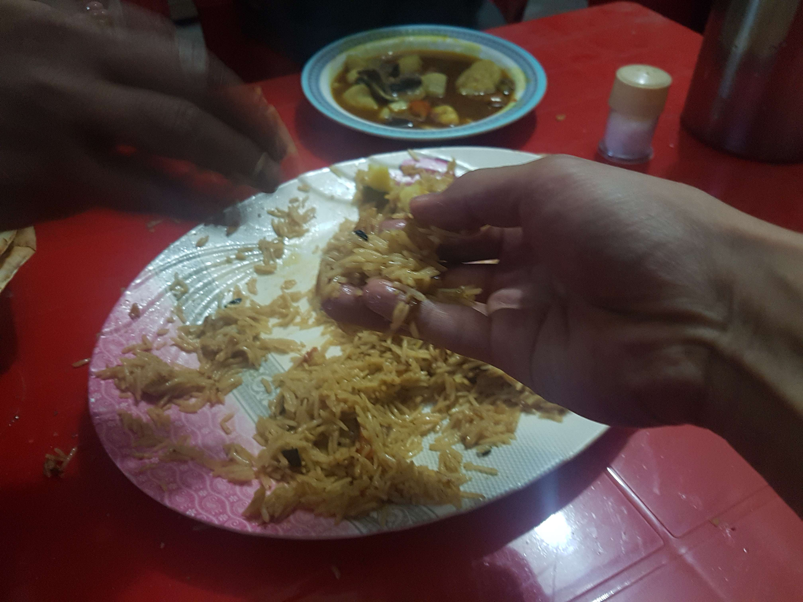
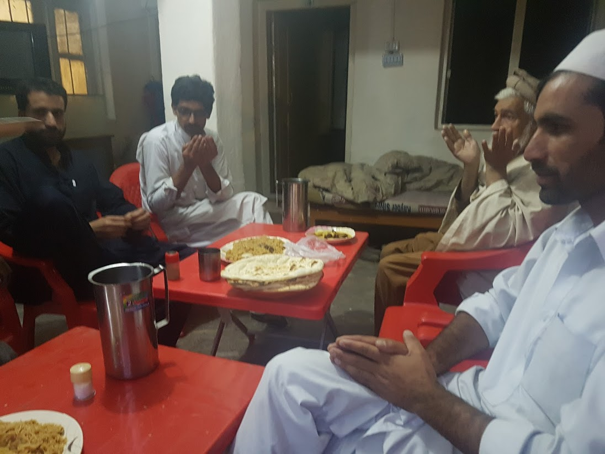

일단 문을 열고 나가면 다음 기회가 찾아온다.
2017년 06월 04일
파키스탄
기분이 이상하다. 즐겁지가 않다. 아침 하루종일 방안에만 있었다. 어제도 하루종일 방에만 있었다. 밖은 너무 덥고 사람들은 영어를 못한다. 전부 가게뿐이다. 라마단이라 밥도 못먹는다. 이곳 카간 밸리에서 뭘좀 구경하고 관광을 하려면 비싼 지프 비용을 지불해야한다. 걸어서 갈수 있는것도 제한적이다 너무 덥다. 강가가 좋을줄 알고 가봤는데 땡볕에 앉아있으려니 쉽지않아서 바로 왔다. 숙소는 전기도 안들어오고 와이파이도 안된다. 저녁에나 잠깐 된다. 건조증 때문인지 며칠째 피부도 계속 가렵다. 온몸이 가려운데 돌아버릴것같음.
여기가 좋으면 오랫동안 묶으려고 했는데 불가능할것 같다. 칠라스 부터 파키스탄 여행이 그닦 즐겁지가 않다. 여행지 자체에 볼것도 없고 사람들을 경험하기가 어렵다. 그동안 경험했던 파키스탄의 친절한 사람들 다 어디 간걸까. 여기가 파키스탄 휴양지다보니 외국인 여행자가 거의없다. 게다가 라마단이라서 그런지 파키스탄 여행자도 없다. 파키스탄 사람들을 좀만나고 싶은데 어디서 만날수 있을지 모르겠다. 까페도 없고 식당도 문을 열지 않는다.
호수에 가려면 1500루피를 주고 지프를 고용하면 된다고 한다. 그럴만한 가치가 있을까? 그동안 싼값으로만 여행했더니 돈으로 자꾸 계산하고 여행일정을 계산하게된다.
외롭다. 아마 처음으로 외로움을 느끼고 있다. 그동안 혼자서도 잘 다녔는데 여긴 철저하게 아무도 없다. 모두 현지인들 뿐인데 그들의 호기심의 시선이 부담스럽기만 하다. 뭐라도 해야할텐데 방안에만 가만히 있는다. 모스크라도 방문해야하나. 그냥 호수에 다녀올까. 다음 장소로 이동하는 방법도 쉽지는 않은것 같다. 어제 물어본 미니버스이동도 사람이 모두 꽉차야 이동한다고 한다.
하루는 그냥 책만 읽을 수도 있을거라고 생각했다. 그냥 오늘 방안에서 책만 읽을까? 근데 방안에만 있었더니 우울해지는것 같다. 하루에도 몇번씩 기분이 좋았다가 우울했다가 한다. 일기를 써야하는데 쓰기 귀찮다. 무기력하다.
그냥 오늘은 방안에서 영화나 책을 보기로 했다. 걸어서 세계속으로 파키스탄 편을 봤다. 살짝 기분이 나아졌다. 카간밸리에서 내가 직면한 문제는 높은 비용이었다. 나는 그 비용이 아까워서 포기하려고 했다. 포기하면 아무것도 얻지 못한다. 돈아끼지 말자. 그래봤자 한국에서 쓰는돈보다 훨씬 저렴한 돈이다. 돈을 아끼기 위해 새로운 경험을 하는것을 포기하지 말자.
스타워즈 로그원을 봤다. 지금 딱 위로가 되는 대사가 나왔다. 영화가 내게 다시 동기를 불어넣어 줬다.
"역시 포기하는 것은 나랑 안맞아요." "어떻게든 착륙만 할 수 있다면, 다음 기회가 오죠" "계속해서 기회를 잡아 이기던지 기회를 잃겠죠. "
그래 우울감과 어려움에 무기력하게 지지말자. 일단 착륙하는 시도를 하는것을 포기하지 말자. 그 뒤에 분명 기회가 온다. 그것은 힘들던 즐겁던 내 삶에 새로운 경험의 하루를 만들어 줄 것이다.
지금 여행지는 확실히 어려운 여행지다. 이곳에서 나는 버티고 극복 해야한다. 포기하고 도망치지 말자. 나란, 이곳에서 내가 여행을 통해 얻으려고 했던것을 얻어내자. 내 삶을 새로운 환경속에서 새롭고 독특한 경험들로 쌓는것이 내가 여행을 통해 얻으려고 하는것이다.
두렵다고 방구석에 홀로 숨지말자. 당당하게 나가자. 이방인에 대한 따가운 시선속으로 당당하게 걸어가자. 나는 여행자다. 나는 탐험가다. 나는 홀로 무거운 베낭을 멘 채 지구 곳곳을 걷는다. 내 삶의 하루하루를 새로운 모험으로 채우고자 하는 여행자다.
이곳 나란에는 낫선 시선과 가게밖에 없다. 나는 이곳에서 무엇을 해야하며 어떤 경험을 얻어야 할까? 일단 오늘 숲쪽으로 하이킹을 가보자. 그리고 내일 호수 예약을 하자. 그리고 내일 쇼그란으로 간다.
일단 문을 열고 나갔더니 내게 찾아온 일들
저녁 5시다. 하지만 나는 용기를 내서 밖으로 나왔다. 아까 영어 잘하는 아저씨가 있는 슈퍼를 찾았었는데 다시 그 아저씨에게 버스 스탠드가 어디있는지 물어봤다. 역시 아저씨가 직접 데리고 버스정류장으로 안내해줬다. 아저씨 이름은 아킬.
마음가짐이 바뀌니 다시 길에서 만난 파키스탄 사람들의 시선이 다르게 느껴진다. 만나는 사람마다 내게 미소를 지어주었으며 반갑게 인사했다. 버스정류장 위치도 파악했고 또 사람들을 만났다.
아킬이 내일 본인이 소유한 게하에 무료로 묶게 해준다고 한다. 오예! 나는 그래서 나란에 하루 더 머물기로 했다. 그리고 아킬이 내일 아침에 저렴한 가격으로 호수로 가는 지프를 예약해 준다고 한다! 다시 나란이 좋아지기 시작했다!! 아킬 가게 앞에서 많은 사람들과 대화를 나눴다. 그리고 아킬의 친구들과 저녁 8시에 다시만나서 저녁 식사를 하기로 했다. 내가 바라던 여행이 바로 이런것이 아닌가??
역시 문제는 여행지가 아니라 나한테 있었던것 같다. 어렵다고 움츠려들지 말고 방안에만 있으면 문제는 더 커질 뿐이다. 오늘의 왠지모를 우울감을 어려움, 해결해야할 대상으로 규정하니 문제는 쉬워졌다. 어려운 문제는 직접 부딛히고 시도하다보면 해결되기 마련이다. 이렇게 극복하려고 적극적으로 노력했더니 오늘 즐거운 일들이 일어날것이다. 나는 고무 됐다.
아킬의 가게에 계속 죽치고 앉아있었다. 처음에는 내일 갈 호수투어 예약 때문에 기다렸지만, 그냥 계속 앉아있으니 친구가 계속 생기고 즐거워서 가게에 있었다. 그리고 남는 시간에 그렇게 쓰기싫었던 일기도 썻다. 가게에서 만난 친구 빌랄과, 유세프. 유세프는 기독교에서 요셉이다. 유세프를 많이 들어봤는데 이게 요셉이었다니 반갑기도 하고 신기했다.

오늘 대접받은 저녁 식사. 플라오와 양고기 카라이? 무척 맛있었다. 라호르에서 먹었던 슈와마 다음으로 맛있는 음식이었다. 게다가 공짜라서 더 맛있었음.

식사를 대접받은 숙소 로비. 왼쪽이 나를 초대해준 아킬, 오른쪽이 그의 베프인 빌랄
식사를 마치고도 계속 가게에 죽치고 있었다. 계속 가게를 왔다갔다하는 현지인들과 놀았다. 가게에 수많은 사람들이 들렀기 때문에 그들과 이야기하고 즐거운 시간을 보냈다. 그리고 거의 나는 일일 카운터처럼 가게를 지켰다. 몇몇 사람들이 달라고 하는것을 주었다. 그들은 무척 의아스럽게 생각했을 것이다. 외국인이 가게일을 보고 있다니 말이다. 그리고 드디어 외국인을 만났다! 처음에 굉장히 백인같은 파키스탄인 인줄알았는데 미국인이었다. 파키스탄 남부에서 오랫동안 살았다고 한다. 그리고 오랫만에 만난 그 외국인들과 잠시나마 반갑게 인사했다.
잠시 씻고 온다고 숙소로 왔다. 숙소에 왔는데 이 호텔에서 일하는 친구들이 자기방으로 초대했다. 오늘 진짜 현지인들과 친구가 많이 된것 같다. 그리고 방안에서 또 이야기를 나눴다. 그냥 오늘 밤새 파키스탄인들과 놀아도 될것 같았다. 가게에서 정말 아무것도 안하고 있었는데도 좋았다. 별다른 생산적인 일을 하지 않아도 현지인들과 시간을 보내는것은 무척 훌륭한 여행인것 같다.
잠깐 아킬 가게에 와서 계란등 아침에 먹을 음식을 구매하고 잠을 자러 가려고 했는데 붙잡혀서 또 엄청 이야기했다. 나보고 자지말라고 한다. 나도 또 붙침성이 있는 성격이라 이 친구들이랑 급속도로 친해졌다. 낮에 아킬이 소개해줬던 아킬의 베스트 프랜드인 자랄은 진짜 또라이다. 엄청 웃긴 친구다. 젊은 친구라 그런지(34살?) 성적인 농담을 엄청 많이 했다. 진짜 웃긴 친구이다. 전세계 어딜가나 남자들이 모이면 하는 이야기가 다 똑같나보다. 무슬림은 예외인줄 알았는데 다 똑같다. 게다가 지금 성스러운 라마단 기간인데도 거침이 없었다.
자와드라는 친구도 만났다. 21살이었는데 32~34살정도의 아킬 친구들이랑 그냥 친구처럼 잘 어울렸다. 나이를 극복한 프랜드십이 너무 부럽다. 나는 젊은이와 노인이 친구가 될 수 있는 문화가 너무 부럽다. 우리나라는 유교사상때문에 아마 죽어도 안될것이다. 아쉽지만 우리나라 문화니 어쩔 수 없다. 자와드가 자꾸 나가자고 한다. 그래서 따라 나갔다. 이친구가 운전을 하는 드라이버 라며 나를 데리고 바카쿤디에 데려간다고 한다. 진짜일까 의심됐지만 어쨋든 따라갔다. 결국 본인 아버지가 운영하는 호텔에 데려갔다. 거기서 짜이도 한잔하고 이야기도 했다. 자와드도 또라이다. 하지만 모두 착하고 순수한 친구들이다. 근데 또라이긴 또라이다. 젊은이들은 다 똑같나 보다.
자와드가 드라이버이기 때문에 내일 호수에 갈 비용에대해 의논했다. 나는 1천 루피를 제안했고 내일 지프 드라이버랑 의논하고 알려준다고 했다. 만약 이 친구가 천루피짜리 지프를 예약해주면 그냥 그렇게 가려고 했다. 그렇게 길고 길었던 하루가 마무리 되었다. 오후 시간에 별의별일이 다있었다. 포기하고 탈출 하려고 했던 나란. 다시 현지인들의 배려와 환대속에서 행복감을 느꼈다.
아킬네 가게내부와 나랑 놀았던 사람들. 중간에 재밌는 손동작을 하고 있는 친구가 자와드.